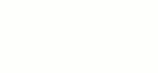

Создание gif-анимации с помощью GIMP
Анимация в данном случае заключается в том, что слои изображения появляются не все сразу, а друг за другом — от нижележащих слоев к вышестоящим.
Если слои прозрачные, то нижние остаются видимыми, когда перекрываются вышестоящими слоями. Поэтому в предложенном ниже упражнении можно было бы оставлять на слоях не несколько букв, а только по одной. Однако при этом пришлось бы выравнивать их относительно друг друга.
- Запустите редактор GIMP.
- Создайте новое изображение размером 250 px ширина и 100 высота.
- Возьмите инструмент текст (Т).
- Установите размер шрифта в 70 px и установите цвет (на ваш выбор).
- Щелкните по рабочей области и в открывшемся окне напишите слово GIMP. Закройте окно.
- Возьмите инструмент перемещение и выровняйте слово по центру листа.
- Создайте три копии слоя с текстом (всего должно получиться четыре слоя с текстом).
- Переименуйте слои так как показано на рисунке.
- Удалите лишние буквы со слоев (то, что должно остаться, показано в имени слоя). Для этого необходимо взять инструмент Текст, выделить нужный слой и щелкнуть по тексту на рабочей области.
- Чтобы убедиться, что на каждом слое находится только та часть слова, которая должна, выключите отображение слоев (нужно щелкнуть по глазу). Потом по-очереди включите их, начиная с нижнего.
- Выделив слой "G", примените к нему какой-нибудь фильтр, например, Альфа в логотип → Мел.
- Если после применения фильтра образуются дополнительные слои, то их следует объединить вместе со слоем, к которому применялся фильтр.
- Проделайте то же самое по отношению к другим слоям.
- Посмотрите анимацию (Фильтры → Анимация → Воспроизведение).
- Сохраните изображение c расширением gif.
- В появляющемся при сохранении окне "Экспортировать в файл" следует выбрать пункт "Сохранить как анимацию".
- В следующем окне установите задержку в 300 мс.
Результат:
